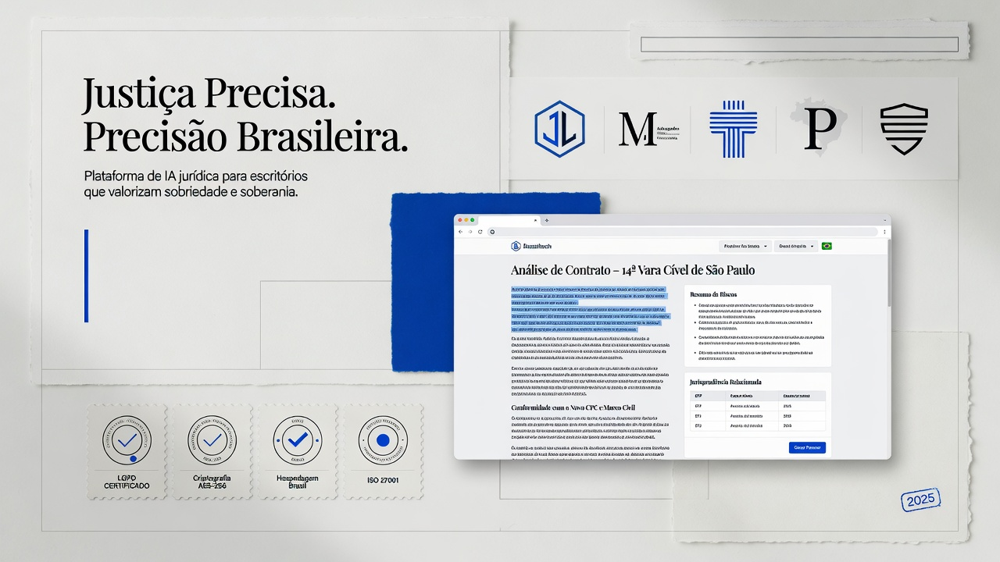
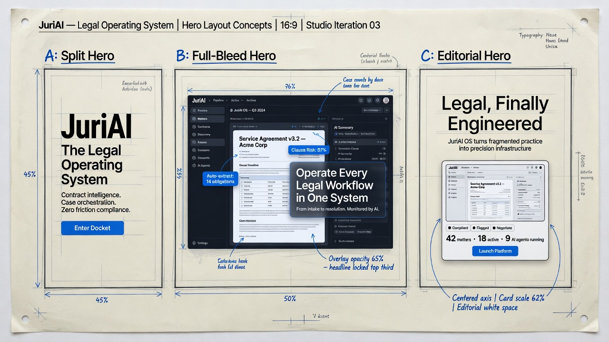
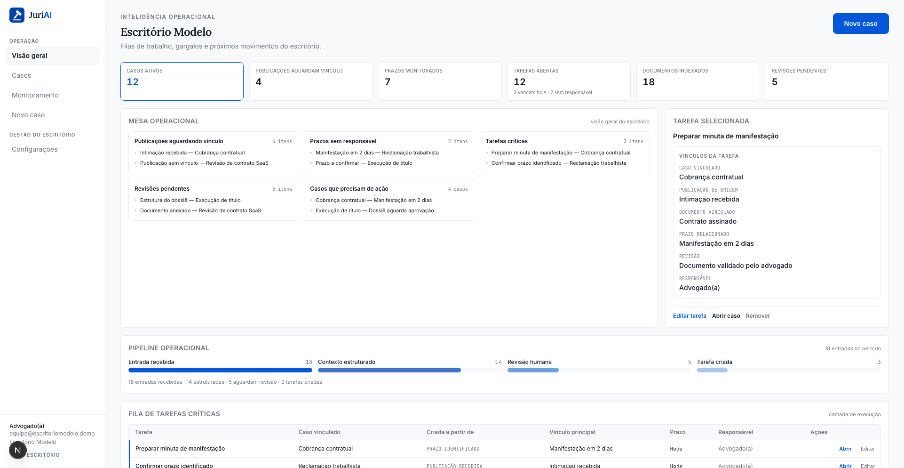

JuriAI · Design research · Esboços v1
Pesquisa nos líderes globais de legaltech (Harvey, Legora e peers), princípios de craft editorial e três esboços de hero para o JuriAI. Logo com martelo mantido. Direção: calma, densa o suficiente, tipo Webflow de consultoria — não landing de vibecode.
01 · Benchmarks mundiais
| Referência | Padrão visual | Motion / craft | O que copiar no JuriAI | O que evitar |
|---|---|---|---|---|
| Harvey harvey.ai |
Enterprise dark/light, hero de impacto, prova social massiva (logos AmLaw), CTA “Request a demo” | Vídeo/poster de produto, carrossel de clientes, seções amplas | Prova social quando existir; hierarquia de CTA; segurança em bloco próprio | Copiar escala “Practice Made Perfect” sem base de clientes reais |
| Legora legora.com |
Headline curta e confiante (“Legal work, without limits”), produto no centro, aOS como sistema | Produto “vivo”, tabs de arquitetura, storytelling de CEO | Frase-mãe curta; posicionar como sistema, não feature; ROI quando houver dado | Jargão de stack (aOS, agentic harness) na home BR |
| Clio | Practice management claro, cores de marca fortes, foco em SMB/firmas | UI didática, menos “art direction” | Clareza de módulos e ICP | Visual genérico de SaaS de gestão |
| Ironclad / Spellbook | Vertical (contratos), screenshots de fluxo, benefícios mensuráveis | Produto em contexto de trabalho (Word, review) | Screenshot do dossiê real; “no fluxo de trabalho” | Prometer automação total da peça |
| Escritórios top / Webflow editorial | Muito branco, tipografia serif, poucos acentos, grid rígido | Scroll suave, fade-in leve, zero parallax de gosto duvidoso | Respiro vertical; serif em H1; borda 1px | Tilt 3D, orbs, mesh gradient, ícones de balança |
02 · Sistema visual proposto
Um único azul de ação. Sem segunda cor “criativa”. Sem gradiente de fundo.
Lora — títulos editoriais
Source Sans 3 — corpo, nav, UI do site
Logo: gavel-tile + wordmark JuriAI (mantido). Radius 2–4px. Sem sombra de elevação.
03 · Moodboards gerados
Atmosfera

Arquitetura

04 · Esboços de hero (alta fidelidade)
Padrão dos melhores SaaS B2B sérios + consultoria. Já alinhado ao que implementamos. Melhor para desktop; empilha no mobile.
Sistema operacional do caso
O JuriAI organiza o dossiê: provas, análise, lacunas e minutas. A IA sugere. O advogado decide.

Estilo Legora/Harvey “produto no trono”. Mais cinematográfico; exige print impecável.
Mais “revista / Webflow agency”. Menos SaaS, mais marca. Bom se o print ainda não estiver perfeito.
Para escritórios que assinam a peça
Provas · análise · lacunas · rascunhos com revisão humana.
05 · Fluxo de página (mapa)
| # | Seção | Objetivo | Referência de craft |
|---|---|---|---|
| 1 | Hero (A) | Promessa + produto | Legora headline + split B2B |
| 2 | Problema | 3 dores do sócio | Editorial, cards com borda |
| 3 | Como funciona | 5 passos do dossiê | Stepper horizontal sóbrio |
| 4 | Produto | Módulos reais | Grid 3 col, sem ícones clichê |
| 5 | Para quem | ICP | Lista tipográfica |
| 6 | Confiança | Anti-alucinação | Tabela (estilo trust center) |
| 7 | Comparativo | Chat vs JuriAI | Tabela densa |
| 8 | CTA | Demo / acesso | Harvey “Request a demo” |
06 · Decisão de design
Manter layout atual, trocar print pelo dossiê 2 colunas, ajustar ritmo vertical (py 16–20), motion só fade.
Faixa de logos / 1 depoimento quando houver piloto real (padrão Harvey).
Só quando o produto estiver estável em staging e o print estiver perfeito.
Este board: /site/esbocos/design-board.html · moodboards na mesma pasta
07 · Links de referência